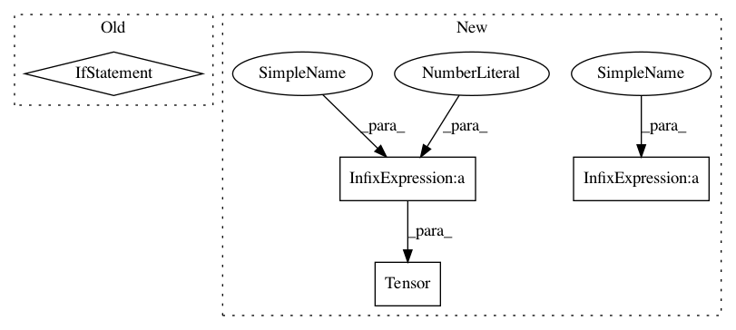

ff242b2a949615a2939e7fbd2dc7b9b81d907aec,cuda_functional.py,SRU,__init__,#SRU#Any#Any#Any#Any#Any#Any#Any#,490
Before Change
l = SRUCell(
n_in = self.n_in if i==0 else self.out_size,
n_out = self.n_out,
dropout = dropout if i+1 != num_layers else 0,
rnn_dropout = rnn_dropout,
use_tanh = use_tanh,
bidirectional = bidirectional
After Change
out_size = n_out*2 if bidirectional else n_out
k = 4 if n_in != out_size else 3
self.size_per_dir = n_out*k
self.weight = nn.Parameter(torch.Tensor(
n_in,
self.size_per_dir*2 if bidirectional else self.size_per_dir
))
self.bias = nn.Parameter(torch.Tensor(
n_out*4 if bidirectional else n_out*2
))
self.init_weight()
def init_weight(self):
In pattern: SUPERPATTERN
Frequency: 3
Non-data size: 4
Instances
Project Name: asappresearch/sru
Commit Name: ff242b2a949615a2939e7fbd2dc7b9b81d907aec
Time: 2017-09-08
Author: taolei@Taos-MacBook-Pro.local
File Name: cuda_functional.py
Class Name: SRU
Method Name: __init__
Project Name: asappresearch/sru
Commit Name: ff242b2a949615a2939e7fbd2dc7b9b81d907aec
Time: 2017-09-08
Author: taolei@Taos-MacBook-Pro.local
File Name: cuda_functional.py
Class Name: SRU
Method Name: __init__
Project Name: asappresearch/sru
Commit Name: 6acdbcfffa5674676dc88c94af3e555f3fa64d17
Time: 2019-10-22
Author: taolei@csail.mit.edu
File Name: sru/sru_functional.py
Class Name: tSRUCell
Method Name: __init__
Project Name: asappresearch/sru
Commit Name: fc850582ced2b873507493a7a6eafd7bcc9a24e2
Time: 2019-09-11
Author: taolei@csail.mit.edu
File Name: sru/sru_functional.py
Class Name: tSRUCell
Method Name: __init__